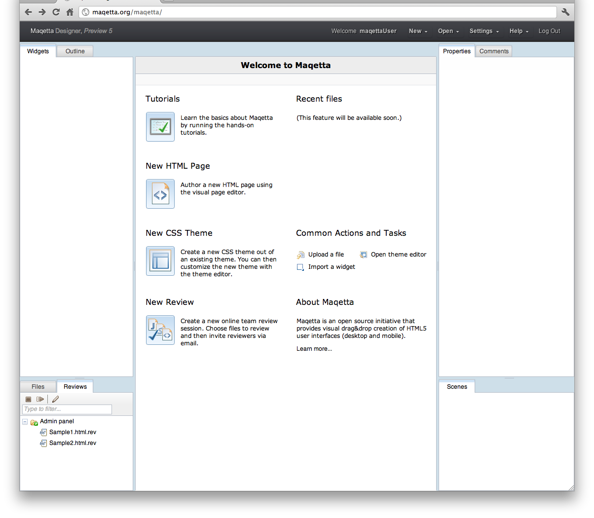
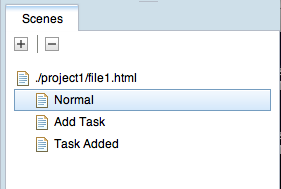
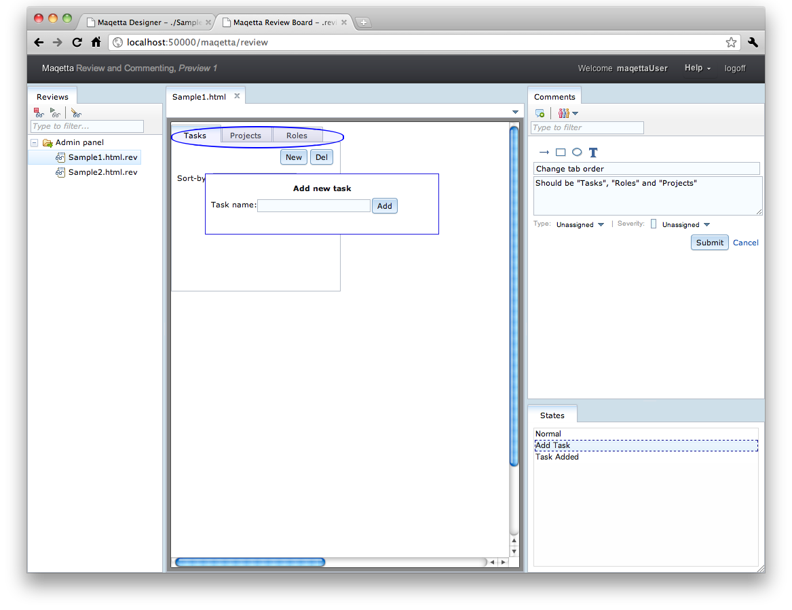

About Review and Commenting
Maqetta includes a web-based review and commenting features that allows authors to share their HTML pages with their team members and receive feedback comments.
Initiating a review session
To initiate a team review, select the "New Review" command found on the "New" menu at the top of the product:

This will bring up the New Review wizard, which has 3 sections. The first section is for general information about this review session, such as title and description. You can also define an end date for the review and customize the window size that will be used when the HTML pages are presented to the user.

The second section of the wizard is where you choose which files from your workspace should be included in the review. You can either select a file and click the right-arrow icon or double-click on files to move them into the right section, which shows the files you have selected.

The third section of the wizard is where you choose the list of reviewers. You can enter email addresses manually. (Note: If your particular installation of Maqetta is integrated with a user database (e.g., LDAP), then you might be able to start typing partial names or email addresses, with auto-complete to show you users that match what you have typed so far.)

Once you have selected files and reviewers, click on the Publish button to initiate the review session.
The Publish button will cause an email invitation to be sent to each reviewer:
| Subject: | You have been invited to review published file(s) |
| To: | <your name and email> |
| From: | (no reply) |
sue@example.com has invited you to review this page.
sue@example.com's message: Proposed admin panel for the new data manager application.
You can review the page by clicking this link: http://<hostname>/maqetta/review/sue@example.com
The email contains the URL which will launch Maqetta in review mode. Upon clicking on this link, reviewers usually will be taken to a login (or registration) screen, and after logging in, they should see the Maqetta application in a new browser window:

The Reviews palette shows the list of review sessions that this user has been invited. The picture above shows one review session, "Admin panel". To see the files that are included in the Admin panel review session, open up "Admin panel" to see its child contents (in this case, Sample1.html.rev and Sample2.html.rev):

The reviewer can now double-click on one of the files (e.g., Sample1.html) to view the page and comment on it:

The reviewer can add a plain-text comment in the Comments palette by clicking on the "Add Comment" icon:

which will cause a comment entry form to appear at the top of the Comments palette into which the reviewer can provide plain text feedback:

While creating a new comment or editing an existing comment (i.e., while the comment entry form is open for editing), the reviewer can also use the annotation icons to draw rectangles, ovals, arrows and plain text on top of the HTML page he is viewing:

For example, the reviewer might put an oval around the tabs in the tab palette:

Upon hitting Submit in the Comments palette for the new comment he has created, his comment (and associated annotations) will be added to the review and the add comment form will close:

Other reviewers can click on "Reply" to add a sub-comment to existing comments or click on the "Add Comment" icon to add new comments.
Many UI mockups will consist of multiple application states, where different parts of the application are visible in one state and other parts of the application are visible in a different state. A review can switch between states and add comments about that particular state by alternately clicking through the states listed in the Scenes palette.

For example, in the picture below, the review has turned on the "Add Task" state, causing the "Add Task" dialog to appear on the main canvas:
